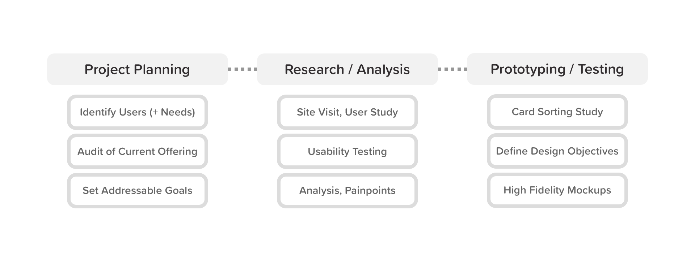
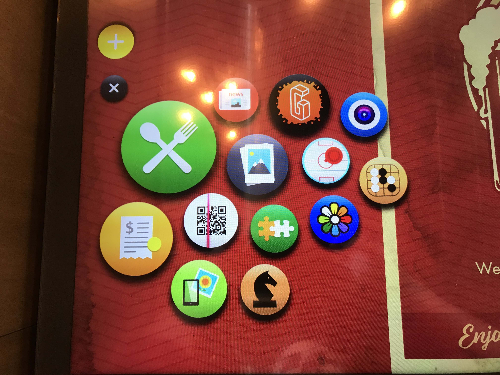
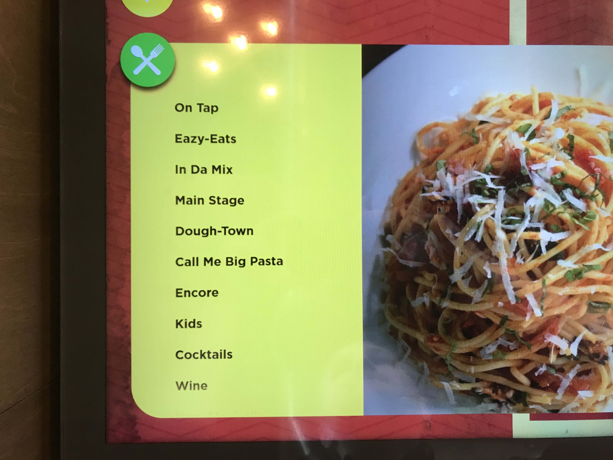
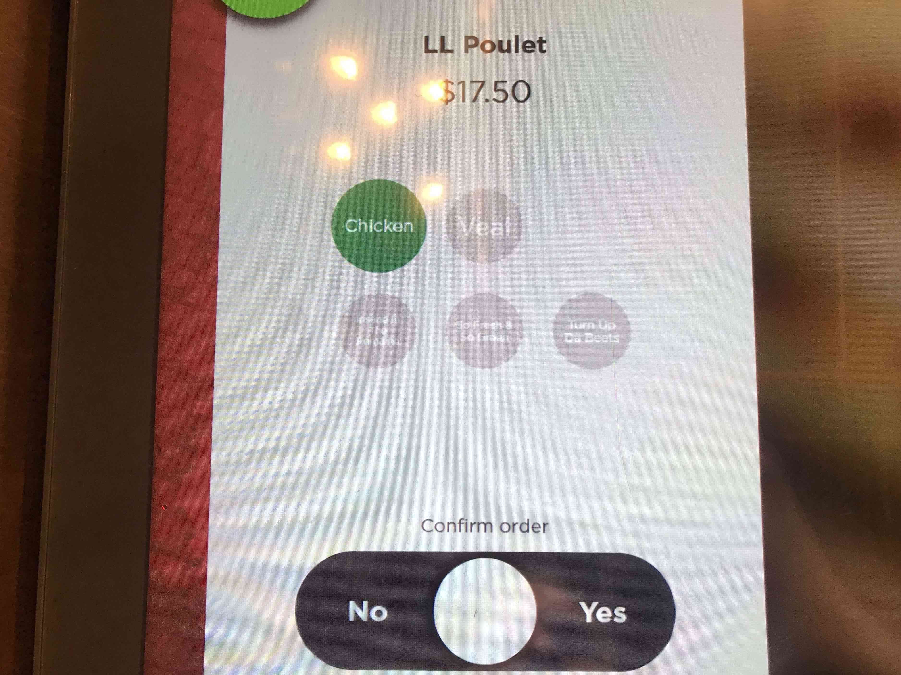
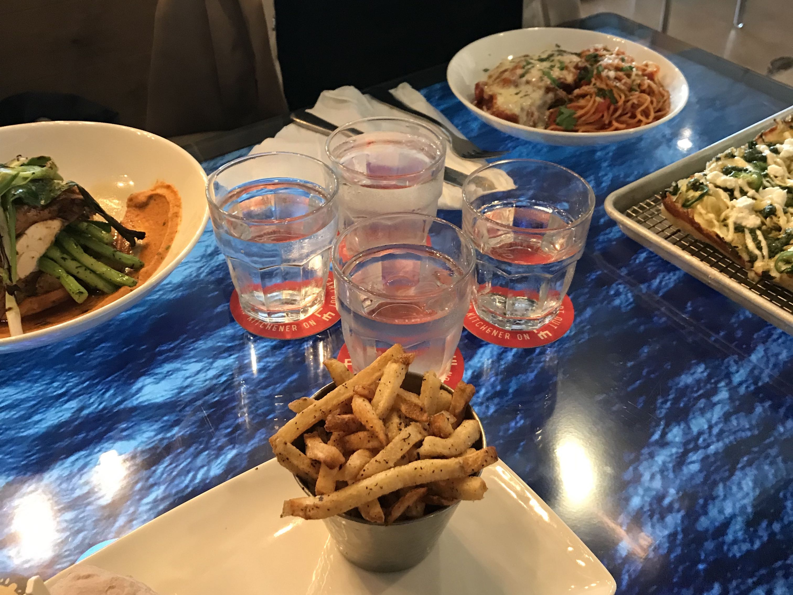
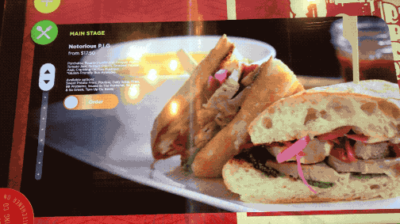
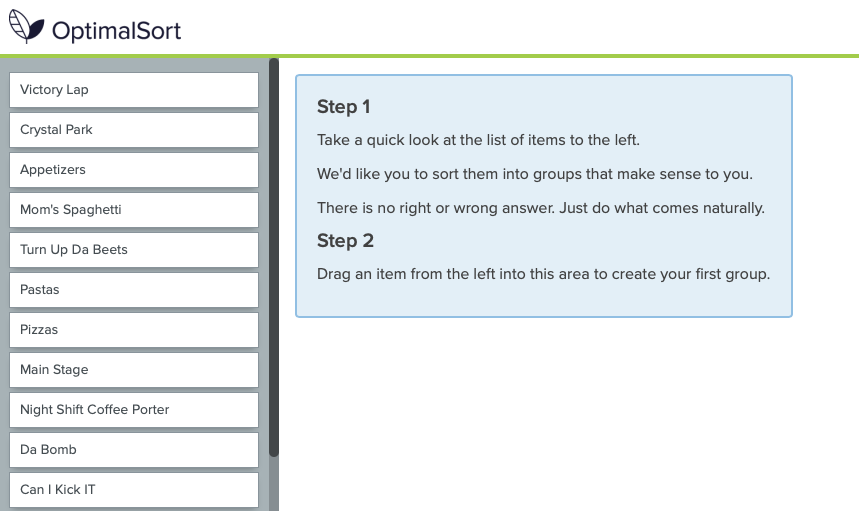

Building better interactions with digital restaurant tables
Project Details
| Developed | 2019 |
| Class | Interaction Design II (UX330) |
| Status | Presented to professor |
| Responsibilities | User Experience Design User Interface Design User Research Documentation |
| Platform | Interactive Digital Restaurant Tables |
| Tools |
Optimal Sort (Card Sorting) Sketch (Prototyping) |
Problem
We observed that the information architecture and interface design of interactive restaurant tables are currently pain points for restaurant visitors. This is causing low rates of adoption in the industry and negative perception among return visitors.Goal
Conduct research with visitors, staff, and design students. I individually took the results from the initial research phase and prototyped a revised implementation of a digital table interface that addresses areas of opportunity.Action
Conduct research with visitors, staff, and design students. I personally took the results from initial research phase and prototyped a revised implementation of a digital table interface that addresses key areas of opportunity.Impact
Received 99 out of a possible 100 marks upon presentation of deliverables to project stakeholders, professors, and peers.Problem space
Context
Interactive digital restaurant tables serve as a unique blend of an analogue and digital design. Tables themselves are not a new invention, and yet their core functionality has remained relatively unchanged over time. Interactive digital restaurant tables have the potential to disrupt the dining industry in a massive way if adopted at scale. I observed that the current implementation of interface design on today's digital dining tables left a lot to be desired.These tables establish a digital touch-point with restaurant-goers and providing unique opportunities to engage with potential menu options. These tables enable restaurants to express creativity through the use of interactive visuals in these menus, as well games and activities.
In theory, these tables should be incredibly positive investments for restaurants with the potential to improve on many aspects of the customer journey. In their current state, however, interactive digital restaurant tables leave a lot to be desired.
After pitching the platform to my project team for my senior level interaction design course, we decided we should find out more about the problem.
Project Timeline
IDRT Figure 1.1: Project Timeline
It should be noted that this work was completed and submitted for a senior level interaction design course. Typically, I would focus on a more holistic perspective when trying to empathize with the user and define their problems. Due to the restrictions in time and budget for this project, we weren't able to be as thorough when creating documentation for our research. To view a project that features examples of my ability to lead effective research, you can click here.
Goal
Narrowing our focus
Because we were working on a very limited timeline (and literally a $0 budget) we decided to narrow our focus to a specific sub-set of users, and their most common problems.We identified our key target users as restaurant patrons in the 15-50 age range who have some prior experience with multi-touch interfaces such as smartphones. These users had an average level of digital literacy. If we had more time and money, I would've liked to focus specifically on older users with lower levels of digital literacy.
I conducted usability tests on the current tables with my group-mates to use as the foundation for our work. We also took in other publicly available customer feedback (such as Google Reviews). Our group established that there is room for design improvements to not only enhance the information architecture and interaction design of the interface, but also to address some accessibility concerns with our solution.
Discoverability
- What sort of changes to the information architecture (such as enhanced labeling, taxonomy and hierarchy) of this digital touch-point can be made to enhance the discoverability and ease-of-use?
- Are the proprietary gesture controls currently used by these tables more difficult for users to understand than a generalized set of controls typically utilized by other digital devices such as smartphones? How could gesture controls be better utilized?
Accessibility
- What efforts are being made to address the accessibility of these digital features for users with visual or auditory impairments?
- Could the information architecture adjustments that help with discoverability also improve the potential accessibility of the services provided by this touch-point?
- What sort of feedback mechanisms (visual or otherwise) could be enabled to better support users through their exploration of an unfamiliar type of interface?
"How might we improve the pleasure, satisfaction, ease-of-use, and accessibility of interactive digital dining tables in order to better augment and enhance customer experience?”
Action
Research phase
As previously mentioned, I conducted usability tests on the current tables with my group-mates to use as the foundation for our work. We also took in other publicly available customer feedback (such as Google Reviews).

IDRT Figure 2.1: Current app selection interface

IDRT Figure 2.2: Current menu categorization

IDRT Figure 2.3: Order modifications / confirmation

IDRT Figure 2.4: Table with food

IDRT Figure 2.5: Current menu item selection process
Here's what we learned:
- The ordering process did not properly adhere to users traditional mental model of restaurant-going, and comparing menu items when choosing what to order was a pain-point. The frustration at that stage was primarily due to the lack of item density, which hindered the user potential for direct item comparison.
- The experience lacked familiarity; proprietary gestures for key actions such as closing an app (holding and swiping down on an app icon) proved confusing for users.
- There are little to no non-visual feedback mechanisms such as haptics, text to speech screen-reading, or even clear status messages throughout the ordering process.
- Despite the table's providing a digital experience, users are bottlenecked by the need for human intervention at multiple points in the process.
- We initially presumed this to be a failure to utilize potential optimizations of the platform, but were informed later by staff that this was intended to reduce user error in ordering. Rather than abandon the potential improvement in favour of what has previously worked, we wanted to generate ideas for how else we could reduce user errors.
TL;DRYR (too long; didn't read your research)
Match familiar mental models
Simplify information architecture
Address accessibility issues
Better utilize technology
Card sorting
Now that we understood the priorities of our users and the potential opportunities we had to improve their experience, our group moved forward to conduct card sorting activities. We conducted a cart sort with the hope of further understanding some of the troubles users experienced with the information architecture, specifically regarding the classification and categorization schemes.

Figure 2.6: Screenshot of card sorting activity
As mentioned previously, our sample restaurant that employs the tables being evaluated for this project is Graffiti Market in Waterloo, Ontario. As part of the restaurant's branding efforts, the labelling for the menu consisted entirely of hip-hop references for the category and dish names. This naturally created some confusion from the first-time users observed in our studies, and contributed to the feelings users expressed of choice overload and an apparent lack of ability to directly compare menu items.
By having no traditional frame of reference to call on to hold menu items and their qualities in working memory, users are forced to seek out this information again by referencing the item again in the singular-item menu view. This is an issue of density with regards to the table, and of labelling in regards to this specific instance of an interactive restaurant table.
We conducted separate card sorting activities at separate stages of the research and design phases; one during our research and planning phase, to identify how users sorted the menu items as presented currently, and one during our design phase to validate our assumptions about categorization.
Being able to navigate the various categories of a menu is a major point in the user journey of ordering at a restaurant. Clear categorization (or at very least a clear naming scheme) is something we observed would help address the gap between users traditional mental model of a menu and the table’s actual behavior.
Although the hip-hop naming scheme of this table's specific menu is not applicable to all digital dining tables, we still found it important to address with our solution.
By having no traditional frame of reference to call on to hold menu items and their qualities in working memory, users are forced to seek out this information again by referencing the item again in the singular-item menu view. This is an issue of density with regards to the table, and of labelling in regards to this specific instance of an interactive restaurant table.
We conducted separate card sorting activities at separate stages of the research and design phases; one during our research and planning phase, to identify how users sorted the menu items as presented currently, and one during our design phase to validate our assumptions about categorization.
Being able to navigate the various categories of a menu is a major point in the user journey of ordering at a restaurant. Clear categorization (or at very least a clear naming scheme) is something we observed would help address the gap between users traditional mental model of a menu and the table’s actual behavior.
Although the hip-hop naming scheme of this table's specific menu is not applicable to all digital dining tables, we still found it important to address with our solution.
Prototyping
Once our card sorting activities were completed, we moved into our prototyping stage with a strong foundation. I personally developed all of the high-fidelity "table" screen mockups that our group presented to our professor and peers at the conclusion of the term.I used Sketch to create a prototype that allowed for a functional demo to be conducted on "stage;" you can click here to view the clickable prototype for yourself.
You'll see 'Figure 3.3: Viewing a menu item' above. While building out this flow and addressing issues we found in our research around item comparison and decision making, we made some key refinements.
Some of the highlights:
Some of the highlights:
- Adding sub-labels for categories, and subtitles for menu items to help create a menu structure that is much easier-to-understand for users.
- Creating a more dense grid-style view for menu items to promote direct comparison of menu items and closer adhere to mental models of menus.
- Maintained or added key information to each item card such as price and a short item description.
- Maintained some of the features unique to a digital menu, including large-scale visuals of menu items and gesture-based navigation.
Further, in the above figure (Figure 3.4: Confirming an order), we were working to avoid the dependency on service staff intervention during the order confirmation process. Adding some intentional friction here was important to ensure users were not mistakenly adding items to their order or mistakenly ordering the correct item with the wrong options.
Some highlights of the decisions we made for this flow:
Some highlights of the decisions we made for this flow:
- Maintaining a consistent gesture for progression with the menu, swipe to add to order, used across the table.
- Displaying signifiers with more clarity for the status of order modifications including sides.
- Informing the user clearly that swiping to add to their order is not the same as confirming their order with the kitchen, and guiding them to do so underneath the confirmation message.
The user flow displayed in Figure 3.5 was built with the goal of better taking advantage of technology. By implementing contactless payment in the table directly (as well as a printer for customer receipts), we create another point in the process that is unique to these digital interfaces (when compared to analogue tables) while also reducing the frequency of required interventions from the service staff.
Some other design decisions suggested when presenting our solution that weren't shown in the previous flows or mockups included:
Some other design decisions suggested when presenting our solution that weren't shown in the previous flows or mockups included:
- Utilizing screen reading technology and haptic feedback options to better augment the visual elements of the interface [furthers our design priority to address accessibility].
- Mapping the 'Home' page icon layout in a grid format, in line with most gestural interfaces [furthers our design priority to adhere to familiar mental models].
- Refining gestures for actions such as closing applications [futhers our design priotity to adhere to familiar mental models].
- Implementing an OLED display and AirPlay 2 functionality so that users are not required to download a specific app to beam content to the table [furthers our design priority to adhere to familiar mental models, and to better utilize available technology].
We recieved 99 out of a possible 100 points for our collective work on this project.
Reflection
Our group was limited on this project by time, budget, and other resource constraints. Although we were able to make really positive changes that would improve the interactions users have with these tables, there is always room for improvement. With more time and money I would have liked to run a truely holistic usability study with properly executed user feedback sessions. I would also have liked to have conducted more thorough research with the table manufacturer and restaurant staff.Thank you!
I'd like to take this opportunity to thank Dr. Umair Rehman for his continued guidance and teaching throughout the duration of this project, as well as my peers Noah Lach, Mikayla Ferraro, and Cedric Zheng for their hard work and support while working through this project as a team.Food images courtesy of Unsplash, iconography from FlatIcon.com. Mastercard, Visa, Interac and Apple Pay trademarks are all property of their respective owners.
I want to acknowledge that this website was built on territories traditionally occupied and cared for by Indigenous Peoples. I attended Wilfrid Laurier University's Brantford campus in an area traditionally occupied by Anishinabeg, Haudenosaunee and Neutral peoples. I want to express my gratitude for the opportunity to learn and grow on this land, which has been cared for by the First Peoples of Canada. We must continue to care about the land and about the issues facing Indigenous peoples.
To learn more about territory acknowledgements and how you can contribute to reconciliation, consider reading this article as a good place to start.